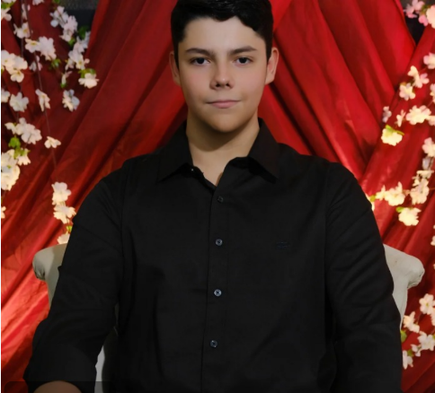

Estudante de TSI e Desenvolvedor Web em formação
Fala! Meu nome é Guilherme Henrique Santos Pereira, tenho 18 anos e nasci em Batayporã, no Mato Grosso do Sul.
Cresci praticamente lá, foi onde vivi a maior parte da minha vida e onde comecei a ter contato com computador. Desde mais novo eu já tinha curiosidade de mexer nas coisas e entender como funcionava.
Hoje estou cursando Tecnologia em Sistemas para Internet na UTFPR, em Toledo. Me mudei pro Paraná por causa disso, foi uma mudança grande, mas valeu a pena pela oportunidade.
Curto bastante programação, principalmente desenvolvimento web. Sempre que dá tô estudando, testando coisa nova ou mexendo em algum projeto.
Atualmente tô mexendo mais com:
No momento não possuo um emprego fixo, mas meu principal objetivo profissional é me tornar um desenvolvedor de software competente com um bom salário e trabalhar criando aplicações e sistemas inovadores e empolgantes.
No futuro, gostaria de trabalhar em empresas da área de tecnologia, adquirir bastante experiência e talvez até desenvolver meus próprios projetos ou produtos digitais.
Minha jornada na programação começou de forma bem curiosa, mexendo no computador sem muito objetivo além de entender como as coisas funcionavam. Com o tempo, essa curiosidade virou interesse de verdade, e comecei a estudar lógica de programação e desenvolvimento web.
Ao longo do meu aprendizado, fui construindo uma base sólida em lógica de programação, que considero uma das partes mais importantes. Aprendi a pensar como programador, resolver problemas, estruturar soluções e entender como os sistemas funcionam por trás.
Minha principal linguagem é o JavaScript, onde desenvolvi boa parte dos meus projetos. Com ele, aprendi desde conceitos básicos como variáveis, funções e estruturas de controle, até conceitos mais avançados como manipulação do DOM, consumo de APIs, programação assíncrona com Promises e async/await.
No desenvolvimento web, tenho experiência com HTML e CSS, onde aprendi a estruturar páginas, trabalhar com semântica, responsividade e estilização. Já desenvolvi interfaces completas, buscando sempre deixar o layout organizado, funcional e agradável.
Também tenho conhecimento em React.js, onde comecei a entender melhor o conceito de componentização, reaproveitamento de código e organização de aplicações modernas. Já trabalhei com estados, props, eventos e estruturação de projetos front-end de forma mais profissional.
No back-end, tive contato com Node.js e Express, onde aprendi a criar APIs, lidar com rotas, requisições HTTP e integração entre front-end e back-end. Isso me ajudou a entender melhor como funciona uma aplicação completa, não só a parte visual.
Além disso, já tive experiências utilizando banco de dados, entendendo conceitos como armazenamento de dados, leitura, escrita e organização das informações dentro de um sistema.
Tenho o costume de aprender na prática, criando projetos próprios e testando ideias. Já desenvolvi aplicações simples e também projetos mais completos, o que me ajudou bastante a evoluir e ganhar experiência real, mesmo sem atuação profissional formal.
Atualmente, continuo estudando e buscando evoluir cada vez mais como desenvolvedor, sempre aprendendo novas tecnologias, melhorando meu código e entendendo boas práticas de desenvolvimento.
Mesmo sem experiência profissional, já desenvolvi alguns projetos pessoais e acadêmicos que me ajudaram a evoluir bastante.
Esses projetos envolveram criação de interfaces, lógica de funcionamento e organização de código, permitindo colocar em prática o que venho aprendendo.
Essas experiências foram importantes para desenvolver minha autonomia e melhorar minhas habilidades na programação.
Apesar de eu ainda não ter hospedado nada em uma Host, todos os meus projetos estão listados públicos em meu GitHub
Escolhi cursar Tecnologia em Sistemas para Internet porque sempre tive interesse por tecnologia e queria aprender a criar coisas, não só usar.
O curso tem me ajudado a entender melhor como funcionam os sistemas e a desenvolver minhas habilidades na área.
Nos meus tempos livres eu curto fazer coisas simples mesmo, nada muito complicado.
Gosto bastante de carro, sempre achei muito legal mas meu interesse real despertou a pouco tempo. Vejo vídeo, acompanho umas coisas e acho top toda essa parte de tunagem, remap, estética e tal.
Também gosto de pescar, mais pela tranquilidade mesmo. Eu acredito que pra mim é um jeito de dar uma desligada de tudo, principalmente quando a cabeça já tá cheia de coisas da vida para resolver.
Jogo bastante no PC com meus amigos também, é uma das coisas que mais faço no dia a dia. A gente entra pra jogar e acaba ficando horas conversando, as vezes é mais pela resenha do que pelo jogo em si.
Fim de semana eu gosto de sair um pouco, dar uns rolê ou só não ficar parado em casa. Mas também curto ficar de boa, principalmente quando tô com meu irmão. Ele mora aqui em Toledo e a gente se dá muito bem, então é sempre muito agradável para mim passar o tempo com ele.
E querendo ou não, mexer com programação também acaba sendo meio que um hobby para mim. Às vezes eu tô só testando coisa, tentando fazer algo diferente ou mexendo em projeto nada a ver só pra aprender. Também gosto bastante de lógica de programação, então as vezes também faço um BeeCrowd da vida.
gui201629@gmail.com
(67) 99889-1326
Social